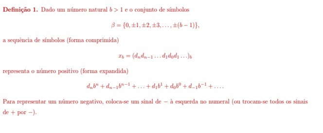

Conversão de Bases Numéricas
As conversões numéricas são utilizadas em muitos casos na computação. Isso porque nós somos acostumados com a base numérica decimal (0, 1, 2, 3, 4, 5, 6, 7, 8, 9, 10, 11, ...), mas no mundo da tecnologia digital os dispositivos eletrônicos trabalham em baixo nível com a base numérica binária (0 ou 1), pois os números binários são facilmente representados na eletrônica através de pulsos elétricos. Além desses dois, as bases numéricas octal e hexadecimal também são muito utilizadas pela fácil representação.
Exemplo:
| Binária(2) | Octal(8) | Decimal(10) | Hexadecimal(16) |
|---|---|---|---|
| 11 | 3 | 3 | 3 |
| 1010 | 12 | 10 | A |
| 100101101 | 455 | 301 | 12D |
| 10101100011 | 2543 | 1379 | 563 |
Repare que quanto maior a base, o número de símbolos usados para representar o mesmo valor será menor que nas bases menores, é isso que facilita a digitação e memorização e processamento dos valores por um computador.
Bases Numéricas , outro exemplo:
Um sistema de numeração (ou sistema numérico), é um sistema em que um conjunto de números é representado por numerais de uma forma consistente por meio de uma base numérica. Esperamos que em um sistema numérico:
- Representa uma grande quantidade de números úteis (ex.: todos os números inteiros, ou todos os números reais);
- Dê a cada número representado uma única descrição (ou pelo menos uma representação padrão);
- Reflita as estruturas algébricas e aritméticas dos números.
Os sistemas numericos utilizados na área da computação: sistema decimal, sistema bińario, sistema octal e o sistema hexadecimal.
Consideremos a seguinte definição:
Exemplo:

Imagens retiradas da apostila
Segue o conteúdo em vídeo do assunto:
Aplicação desenvolvida com JavaScript
Aqui temos um programa integrado na página que permite ao usuário inserir um numero decimal qualquer e ter o retorno do correspondente nas bases binárias, octal e decimal:
| Binário | Octal | Hexadecimal |
|---|---|---|